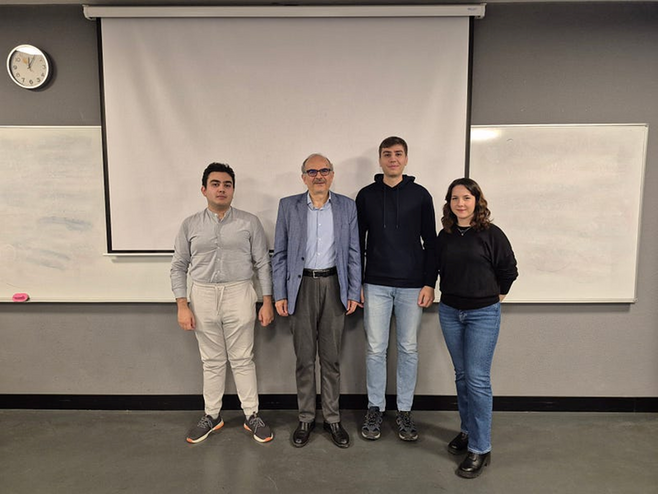

In a period marked by transitions, the global economy is adjusting to shifts in trade patterns, evolving energy markets, post-pandemic recoveries, and the transformative impact of artificial intelligence. Supply chains are being reorganized, monetary policies are calibrating themselves to changing inflation dynamics, and firms are reassessing investment plans due to technology adoption and updates in regulations and policy. Financial conditions differ across developed and developing economies; capital flows and exchange rates shift accordingly, while demographic trends and productivity continue to shape growth prospects.
These factors bring uncertainty but also clarify the constraints and trade-offs that policymakers, businesses, and households face. To address these challenges, TEDU ERU spoke with Prof. Dr. Erdem Başçı, faculty member in the Economics Department at TED University, former Governor of the Central Bank of the Republic of Türkiye, and former Ambassador and Permanent Representative of Türkiye to the OECD (2016–2021). Prof. Başçı provided structured reflections on monetary transmission, price stability, financial intermediation, and policy design—drawing from his extensive experience in central banking and international economic affairs.
Why inflation, uncertainty, and AI matter now
Most discussed topics in the global economy in recent years have been inflation, uncertainties, and artificial intelligence. In your opinion, why have these three concepts become so critical?
All three have serious importance for society at large, and all three rose rapidly and unexpectedly.
When Nobel laureate economist Thomas Sargent published his book The Conquest of American Inflation in 2001, no one expected inflation to reappear as a problem until the pandemic in 2020. Since the establishment of the World Trade Organization in 1995, efforts were directed toward removing barriers to international trade, and tariff rates remained durably low globally, reducing uncertainty there—until the changes in the stance of the US administration in 2018 and 2025. When public research funding for artificial intelligence was completely cut in the 1980s, no one expected AI to develop rapidly and not only become part of our daily lives but also lead to rooted and rapid changes in economies and the world of work. All of these took place after the "deep learning" revolution in 2010.
All three—inflation, uncertainty, and AI—rose rapidly and unexpectedly. — Prof. Dr. Erdem Başçı
Supply vs. demand-side drivers of inflation
While considering that inflation rose after the pandemic, do you think today's high inflation has been driven more by supply shocks or by demand-side policies?
Research especially points to demand-side factors playing a larger role in the rise of inflation in the US. In addition to expansionary monetary and fiscal policies, I also think that the loosening of macroprudential policies played an important role in excessive monetary expansion after the pandemic.
In particular, the ability to use bank capital adequacy ratios countercyclically became possible during the 2020 pandemic shock, and this was very effective in reviving the money-credit mechanism. In 2009, this tool could not have been used, because the problem at that time originated in the significant erosion of banks' equity capital base.
How are inflation dynamics changing for emerging economies?
The key role of expectations once again reflects itself in inflation dynamics. This is especially so in emerging economies. As using expectations themselves as the nominal anchor may become more difficult in these countries, the difficulty increases particularly when inflation expectations become heterogeneous. In such cases, I think it would be useful for nominal money-credit growth to once again assume the role of a supporting nominal anchor.
Geopolitical shocks and protectionism
How do global sources of uncertainty such as wars, geopolitical risks, and rising protectionism affect inflation?
Protectionism can have a one-time effect that raises the price level in the country that implements it. Whether this turns into sustained higher inflation depends on the policy response of the central banks. If an inflationary policy is implemented and the nominal anchor property of expectations is eroded, this can indeed turn into inflation. A similar argument applies to geopolitical shocks—for example, through energy price hikes triggered by them.
On the other hand, concerns about the possibility of excessive and unwarranted expansion in monetary policy, and the uncertainty surrounding this, can have a lasting adverse effect on money demand and may, in the long run, trigger significantly high inflation.
Artificial intelligence and emerging economies
For emerging economies, is artificial intelligence an opportunity, or is it a new risk that increases dependence on advanced economies?
I think the opportunity side is greater. Learning these technologies is not that difficult. Finding sufficiently powerful hardware is also quite easy these days. Emerging economies which can adapt their education systems will be able to obtain net benefits from the presence and further development of artificial intelligence technologies.
How should we evaluate AI's role as a complement or substitute from an economic perspective? What should be the priority policies for collaboration between universities, private sector and the public sector in terms of efficiency?
Progress in image recognition and speech recognition technologies accelerated considerably after 2010. Progress in this area may, for example in disease diagnosis, be complementary to physicians for now but more substitutive in the long run. However, in a field like robotic microsurgery, the complementary effect will be more prominent.
Digital currencies and financial inclusion
Considering the digitization of money definitions (stablecoins and CBDC), does the increase in financial inclusion have a disinflationary effect, or does it intensify demand-side pressures?
Central Bank Digital Currency (CBDC) can be considered, within textbook definitions, as the closest substitute for paper money. As a liability of the central bank, this type of money can be safely used in purchases and debt payments, and "smart contract" features can also be easily added to it. It is more likely that this type of money would substitute for paper currency rather than be inflationary.
Special types of digital tokens labelled "stablecoins" will not be a problem as long as they are backed on a full reserve basis by fiat currencies or safe public securities. However, the question of how and by whom these reserves will be audited has not yet been clarified. This private form of money can become inflationary to the extent that the growth rate of its balances facilitates the monetization of government budget deficits.
Do you think digital currencies like CBDC and stablecoins will become the primary payment methods?
CBDC is already being designed as a convenient and low-cost payment tool, including for cross-border payments. Therefore, for a country like Sweden, which aims to eliminate the usage of paper money, this could become a natural mainstream payment method. Stablecoins, also known as private digital currencies, are offered to the public with the claim of being a cost-free payment tool. Their continued viability as a payment tool will depend on whether their promised "par" features are truly sustainable.
